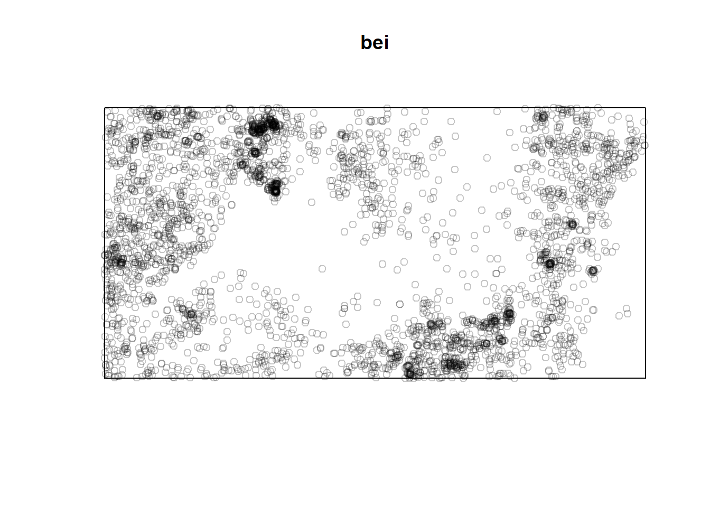

This post will be a collection of simulations I made based on the materials from the post ‘Testing for CSR’. The data I will be using are:
- Locations of 65 Japanese black pine saplings in a square of side-length 5.7 metres (Numata 1961)
- Locations of 62 redwood seedlings in a square of side-length 23 metres (Strauss 1975; Ripley 1977)
- Locations of 42 cell centres in a unit square (Ripley 1977)
- Locations of 3604 trees of the species Beilschmiedia pendula (Lauraceae) in a 1000 by 500 metre rectangular sampling region in the tropical rainforest of Barro Colorado Island (Hubbell and Foster 1983; H. Condit R. and Foster 1996; R. Condit 1998)

The first 3 have been used for demonstration in Diggle’s book, and my plots indeed show similar results to Diggle’s.
Inter-event distances
Japanese black pines
My replication of Diggle’s plot on Japanese black pine saplings, using 99 simulations of CSR for the envelopes, affirms acceptance of CSR. This agrees with (Bartlett 1964) and (Besag and Diggle 1977), who used a \(\chi^2\) test on a histogram of inter-event distances.
Redwood
\(\hat{H}_1(t)\) is greater than \(H(t)\) throughout the range, especially for very small and very large values of \(H(t)\), where \(\hat{H}_1(t)\) exceeds the upper envelope. The excess number of small values of \(H(t)\) may be explained by Strauss’ remark that a distance of 6 feet on the ground (\(t \approx 0.08\)), was “very roughly the range at which a pair of seedlings could interact.”
A formal test of significance based on the measure of the discrepancy between \(\hat{H}_1(t)\) and \(H(t)\), however, might suggest acceptance of CSR with a significance level of 0.22, according to Diggle. Indeed, \(\hat{H}_1(t)\) lies relatively close to \(H(t)\) throughout the range. This shows that observation of the EDF plot with the simulation envelopes may provide insights that formal tests of significance do not.

Cells
Again, a formal test of significance may suggest acceptance of CSR, with a significance level of 0.23. However with parts of the graph (especially at low values of \(H(t)\)) lying outside the simulation envelopes, it suggests otherwise. Note that for small values of \(t\), \(\hat{H}_1(t)=0\), i.e. small inter-event distances are absent. This explains the regularity of the pattern. Also, for large values of \(t\), \(\hat{H}_1(t)\) lies close to the upper envelope. Looking at the graph depicting the data, we can observe that there are no events present at the corners of the square. These empty spaces result in lack of large inter-event distances.
Beilschmiedia pendula (Lauraceae)
Clearly, with the excess of small inter-event distances and the deficit of larger inter-event distances, we have sufficient evidence to reject CSR. This is to be expected, as we see from the graph that events are clustered around certain areas, with large empty spaces near the middle part of the region and to the right.
Nearest neighbour distance
Japanese black pines
This plot suggests acceptance of CSR. According to Diggle, a formal Monte Carlo test based on the squared difference between \(\hat{G}\) and \(\bar{G}\) arrives at the same conclusion with significance level 0.52.

Redwood
With a large proportion of \(\hat{G}\) lying above the upper envelope, there is strong evidence for rejecting CSR. This is supported by the Monte Carlo test, in which \(u_1\) is larger than all 99 simulated \(u_j\).
The excess of nearest neighbour distances is typical for an aggregated pattern like these redwood seedlings.
Cells
Again, there is strong evidence against CSR. The Monte Carlo test also gives a \(u_1\) that is comfortably larger than all the other \(u_j\). Note that there is a lack of small nearest neighbour distances, characteristic of regular patterns.
Beilschmiedia pendula (Lauraceae)
Similar to the behaviour of the redwood saplings, there is a large proportion of \(\hat{G}\) above the upper envelope, so we may reject CSR.
Point to nearest event distances
Japanese black pines
This plot is obtained using a regular grid of 256 (\(16 \times 16\)) points over the window. We see that \(\hat{F}\) lies close to \(F\) throughout the range and between the envelopes. Just like our previous analysis of this data, we accept CSR.
Redwood
Again, we obtain the plot using the regular pattern of 256 points. Clearly \(\hat{F}\) lies below the lower envelope for most of the range, suggesting rejection of CSR. This is a typical behaviour of aggregated pattern.
Performing a Monte Carlo test based on the squared differences between \(\hat{F}\) and \(\bar{F}\) gives the same conclusion, with \(u_1\) larger than all 99 simulated \(u_j\).
Cells
This time we use a regular grid of 196 (\(14 \times 14\)) points. With a large proportion of the graph of \(\hat{F}\) lying above the upper envelope, CSR is rejected. The Monte Carlo test agrees with this at the significant level of 0.02, according to Diggle.
Beilschmiedia pendula (Lauraceae)
The regular grid I used is of 7200 (\(120 \times 60\)) points. Again, similar to the redwood saplings, \(\hat{F}\) lies below the lower envelope for the most part. This suggests that CSR may be rejected, and this is an aggregated pattern.
Quadrat counts
Japanese black pines
For the data set of Japanese black pine saplings, we may use a \(3 \times 3\) grid to ensure that the expected frequencies are at least 5. Below is the observation:
quadratcount(japanesepines, nx = 3, ny = 3) x
y [0,0.333) [0.333,0.667) [0.667,1]
[0.667,1] 6 15 7
[0.333,0.667) 10 4 3
[0,0.333) 4 8 8To perform the \(\chi^2\) test, we may employ the quadrat.test function:
quadrat.test(japanesepines, nx=3, ny=3, alternative='clustered')
Chi-squared test of CSR using quadrat counts
data: japanesepines
X2 = 15.169, df = 8, p-value = 0.05594
alternative hypothesis: clustered
Quadrats: 3 by 3 grid of tilesHere we observe that the one-sided p-value is about 0.06, so evidence against CSR is weak.
Redwood
Again we use a \(3 \times 3\) grid for this dataset to keep the expected counts over 5.
quadratcount(redwood3, nx = 3, ny = 3) x
y [0,0.333) [0.333,0.667) [0.667,1]
[-0.333,0] 0 6 13
[-0.667,-0.333) 13 8 2
[-1,-0.667) 5 9 6quadrat.test(redwood3, nx=3, ny=3, alternative='clustered')
Chi-squared test of CSR using quadrat counts
data: redwood3
X2 = 22.774, df = 8, p-value = 0.003667
alternative hypothesis: clustered
Quadrats: 3 by 3 grid of tilesThe \(X^2\) value of 22.77 is highly significant (p-value of 0.0037), leading to rejection of CSR. If we try to use quadrats of different sizes:
quadrat.test(redwood3, nx=4, ny=4, alternative='clustered')Warning: Some expected counts are small; chi^2 approximation may be inaccurate
Chi-squared test of CSR using quadrat counts
data: redwood3
X2 = 38.129, df = 15, p-value = 0.0008635
alternative hypothesis: clustered
Quadrats: 4 by 4 grid of tilesquadrat.test(redwood3, nx=2, ny=2, alternative='clustered')
Chi-squared test of CSR using quadrat counts
data: redwood3
X2 = 5.2258, df = 3, p-value = 0.156
alternative hypothesis: clustered
Quadrats: 2 by 2 grid of tilesWe see that the one-sided p-value for \(4 \times 4\) is about 0.0002, also leading to rejection of CSR. However the p-value for \(2 \times 2\) is 0.089. It is apparent that using different-sized quadrats may lead to different conclusions, and smaller-sized quadrats give stronger rejection of CSR.
Cells
We will test on the data using the 3 different-sized quadrats mentioned for the redwood data. Here is the \(3 \times 3\) quadrat counts for reference:
quadratcount(cells, nx = 3, ny = 3) x
y [0,0.333) [0.333,0.667) [0.667,1]
[0.667,1] 3 6 3
[0.333,0.667) 4 7 6
[0,0.333) 3 6 4quadrat.test(cells, nx=4, ny=4, alternative='regular')Warning: Some expected counts are small; chi^2 approximation may be inaccurate
Chi-squared test of CSR using quadrat counts
data: cells
X2 = 2.9524, df = 15, p-value = 0.0003641
alternative hypothesis: regular
Quadrats: 4 by 4 grid of tilesquadrat.test(cells, nx=3, ny=3, alternative='regular')Warning: Some expected counts are small; chi^2 approximation may be inaccurate
Chi-squared test of CSR using quadrat counts
data: cells
X2 = 4.2857, df = 8, p-value = 0.1695
alternative hypothesis: regular
Quadrats: 3 by 3 grid of tilesquadrat.test(cells, nx=2, ny=2, alternative='regular')
Chi-squared test of CSR using quadrat counts
data: cells
X2 = 0.47619, df = 3, p-value = 0.07591
alternative hypothesis: regular
Quadrats: 2 by 2 grid of tilesSince we have established that the cells data is a regular pattern, we may evaluate the p-value as \(P(\chi^2 < X^2)\) instead.
The p-values defined this way for \(2 \times 2, 3 \times 3, 4 \times 4\) grids are 0.076, 0.17, 0.0004 respectively. This shows that the observed values of \(X^2\) are below expectation in all of them, and at a significance level of 0.1 we may reject CSR except for the \(3 \times 3\) grid. The failure in rejection for this grid and the large significance level suggests that this test is weak against regular patterns.
Beilschmiedia pendula (Lauraceae)
quadrat.test(bei, nx=38, ny=19, alternative='clustered')Warning: Some expected counts are small; chi^2 approximation may be inaccurate
Chi-squared test of CSR using quadrat counts
data: bei
X2 = 8605.9, df = 721, p-value < 2.2e-16
alternative hypothesis: clustered
Quadrats: 38 by 19 grid of tilesquadrat.test(bei, nx=37, ny=19, alternative='clustered')
Chi-squared test of CSR using quadrat counts
data: bei
X2 = 9397.2, df = 702, p-value < 2.2e-16
alternative hypothesis: clustered
Quadrats: 37 by 19 grid of tilesquadrat.test(bei, nx=38, ny=18, alternative='clustered')
Chi-squared test of CSR using quadrat counts
data: bei
X2 = 8349.7, df = 683, p-value < 2.2e-16
alternative hypothesis: clustered
Quadrats: 38 by 18 grid of tilesI have performed tests using \(38 \times 19\), \(37 \times 19\) and \(38 \times 18\), which give expected counts of around 5. All of the p-values obtained are very small, so there is strong evidence for rejection of CSR.
It is evident that CSR would be rejected for Beilschmiedia Pendula, using all the methods mentioned above. Indeed, the sampling region has elevations and swamp areas, which make the distribution of these trees an inhomogeneous process.
References
Baddeley, A., E. Rubak, and R. Turner. 2015. Spatial Point Patterns Methodology and Applications with r. Chapman; Hall.
Bartlett, M. S. 1964. “The Spectral Analysis of Two-Dimensional Point Processes.” Biometrika 52: 299–311. https://doi.org/10.1093/biomet/51.3-4.299.
Besag, Julian, and Peter J. Diggle. 1977. “Simple Monte Carlo Tests for Spatial Pattern.” Journal of the Royal Statistical Society. Series C (Applied Statistics) 26 (3): 327–33. https://doi.org/10.2307/2346974.
Condit, Hubbell, R., and R. B. Foster. 1996. “Changes in Tree Species Abundance in a Neotropical Forest: Impact of Climate Change.” Journal of Tropical Ecology 12: 231–56. https://doi.org/10.1017/S0266467400009433.
Condit, R. 1998. Tropical Forest Census Plots. Springer-Verlag, Berlin; R.G. Landes Company, Georgetown, Texas.
Hubbell, S. P, and R. B. Foster. 1983. Diversity of Canopy Trees in a Neotropical Forest and Implications for Conservation. Edited by T. C. Whitmore, A. C. Chadwick, and A. C. Sutton. The British Ecological Society.
Numata, M. 1961. “Forest Vegetation in the Vicinity of Choshi. Coastal Flora and Vegetation at Choshi, Chiba Prefecture, IV.” Bulletin of Choshi Marine Laboratory, Chiba University 3: 28–48.
Ripley, B. D. 1977. “Modelling Spatial Patterns.” Journal of the Royal Statistical Society, Series B 39: 172–212. https://doi.org/10.1111/j.2517-6161.1977.tb01615.x.
Strauss, D. J. 1975. “A Model for Clustering.” Biometrika 62: 467–75. https://doi.org/10.1093/biomet/62.2.467.